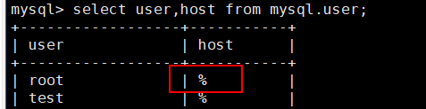

After the client is installed on the host where the MySQL/MariaDB/GreatSQL database resides, the product automatically discovers the MySQL/MariaDB/GreatSQL database host. You need to register the database on the host on the management page to protect the database or use the database as the restoration target.
Context
The product supports the backup of the MySQL/MariaDB/GreatSQL database and other user-defined databases, but does not support the backup of the system databases information_schema, performance_schema, sys, and mysql. Therefore, the registration of the system database is not supported.
Prerequisites

Data on all nodes in the cluster must be synchronized. The procedure is as follows:
- Log in to the database of each node.
- Run the mysql -uUsername -pPassword -e "show slave status\G" command.
- Check that data is synchronized if the values of Slave_IO_Running and Slave_SQL_Running in the command output are Yes.
Registering a Single MySQL/MariaDB/GreatSQL Instance
- Choose Protection > Databases > MySQL/MariaDB/GreatSQL.
- Click the Instances tab.
- Click Register to register MySQL/MariaDB/GreatSQL.
Instances in the MySQL/GreatSQL cluster environment cannot be used for single-instance registration.
- Set Type to Single instance.
- Configure the database instance and its authentication information.
Table 1 describes the related parameters.
Table 1 MySQL/MariaDB/GreatSQL single-instance registration information Parameter
Description
Name
Custom instance name.
Hosts
Database host to be registered.
Add IP address for accessing MySQL
IP address for accessing the MySQL service. This parameter is optional.
NOTE:Add such an address only when the cluster type is eAPP.
Port
In the Linux OS, the port number is displayed. The default port number is 3306.
Username
Enter the username created in Step 1: Enabling MySQL/MariaDB/GreatSQL Database Permissions.
Password
Password of the username.
Character Set
NOTE:This parameter is displayed only in 1.6.0 and later versions.
Database character set.
To query the character set, perform the following steps:
- Log in to the database host.
- Run the following command to query the character set of the current connection:
SHOW VARIABLES LIKE 'character_set_%';
- Run the following command to query the default character set of the server:
SHOW VARIABLES LIKE 'character_set_server';
MySQL Configuration File Path
NOTE:This parameter is displayed only in 1.5.0.SPC16 and later versions.
Enter the MySQL configuration file path if the configuration file is not stored in the default path.
To query the default path of the configuration file, perform the following steps:
- Log in to the database host.
- Run the following command to search for the configuration file (my.cnf as an example):
mysql --help | grep 'my.cnf'
Percona XtraBackup Path
If Percona XtraBackup is installed in the default path, leave this parameter blank.
If Percona XtraBackup is not installed in the default path, enter the installation path of Percona XtraBackup, for example, /opt/DataBackup/ProtectClient/Plugins/GeneralDBPlugin/bin/xtrabackup.
Library Path of Percona XtraBackup
If Percona XtraBackup is installed in the default path, leave this parameter blank.
If Percona XtraBackup is not installed in the default path, enter the library path of Percona XtraBackup, for example, /opt/percona/percona-xtrabackup-2.4.25-Linux-x86_64.glibc2.12/lib.
- Click OK.
Registering a MySQL/MariaDB/GreatSQL Cluster Instance
- Register a cluster.
- On the MySQL/MariaDB/GreatSQL page, click the Cluster tab.
- Click Register.
- On the Register page, customize the cluster name and select the type and cluster node.
Table 2 describes the related parameters.
Table 2 Parameters for registering a cluster Parameter
Description
Name
Custom cluster name.
Type
Cluster type, which can be Active/Standby Replication or PXC(Percona XtraDB Cluster).
NOTE:GreatSQL supports only Active/Standby Replication.
- If you select Active/Standby Replication, the node where the active MySQL/MariaDB/GreatSQL instance resides must be included.
- If you select PXC(Percona XtraDB Cluster), the nodes where the MySQL/MariaDB cluster instances are located must be included.
Nodes
Host where the MySQL/MariaDB/GreatSQL instance is located.
- The selected hosts must be from the same cluster.
- If the database cluster is an active/standby cluster and the relay-log configuration item exists in the /etc/my.cnf file, set relay_log_recovery to on to avoid restoration failure.
- Click OK.
- Register a cluster instance (applicable to active/standby mode).
- On the MySQL/MariaDB/GreatSQL page, click the Instance tab.
- Click Register.
- Set Type to Cluster instance.
- Enter an instance name and select a cluster.
- Click Add. In the displayed Add dialog box, add all nodes in the cluster instance.
Table 3 describes the related parameters.
Table 3 Node information of a cluster instance Parameter
Description
Hosts
Select a host node in the cluster.
eAppMySQL Address
Access the IP address of the eAppMySQL management network.
NOTE:GreatSQL does not support this parameter.
Port
In the Linux OS, the port number is displayed. The default port number is 3306.
Username
Enter the username created in Step 1: Enabling MySQL/MariaDB/GreatSQL Database Permissions.
Log in to the MySQL/MariaDB/GreatSQL host as user root and run the following command to log in to the MySQL/MariaDB/GreatSQL database:
mysql -uroot -pPassword
Run the following commands to enable the remote connection permission for the user:UPDATE mysql.user SET user.Host='%' where user.User='Username'; flush privileges;
Run the following command to check whether the remote connection permission is granted to the user:
select user,host from mysql.user
If the value of host is % in the command output, the remote connection permission has been enabled.

Password
Password of the database.
Character Set
NOTE:This parameter is displayed only in 1.6.0 and later versions.
Database character set.
MySQL Configuration File Path
NOTE:This parameter is displayed only in 1.6.0 and later versions.
This parameter is required if the configuration file is not stored in the default path such as /etc/my.cnf.
- Click OK.